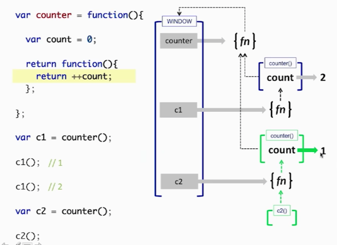

A closure is an inner function that has access to the outer (enclosing) function's variables—scope chain. The closure has three scope chains: it has access to its own scope (variables defined between its curly brackets), it has access to the outer function's variables, and it has access to the global variables
